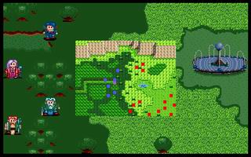

第四章 骑兵团

 雷特
雷特 米兰
米兰 克隆
克隆 艾利欧
艾利欧 巴拉多
巴拉多 洛加
洛加
本关敌人：
 LV5 希瓦那 （HP420,AP120,DP65,HIT95,EV15,MV7）
LV5 希瓦那 （HP420,AP120,DP65,HIT95,EV15,MV7）
 LV3 骑兵x12（HP180,AP59,DP20,HIT94,EV6,MV7）
LV3 骑兵x12（HP180,AP59,DP20,HIT94,EV6,MV7）
胜利条件：敌人全灭
失败条件：雷特死亡
战后加入：
LV5 骑士 希瓦那（HP420,AP120,DP71,HIT95,EV15,MV7,骑枪,锁子甲）
战后报酬：
$1000G/$3000G
攻略简要：
此关会发现一件事，战场上的敌兵全是骑兵，所以此关并没有之前的容易，一开始上下一共6只骑兵，便会冲过来，必须速战速决，以免希瓦那冲过来时来不及防备，尽量利用树林，不只是防御力会提升，在树林中骑兵的移动能力很差，此关的护盾可考虑用米兰，因为她换上巫师袍后，除了希瓦那外的骑兵打她都是1滴，因为洛加防御力很差，所以要在此关练洛加并不容易，对付希瓦那时，一定要在短时间内击杀，否则我军将会被后面的骑兵杀的无招架之力，请各位玩加一定要抓准回合数。如果你过不了才看这里喔:在第一回合时，用随便一个人以F1大法打希瓦那一下，然后你会发现，除了先锋的6只骑兵外，只有希瓦那冲上来，其它都不动，这样还打不赢的话，我也就没有办法了喔。
本章11回合内获胜到第五章之一东山道，12回合以上才获胜到第五章之二西山道。无论走那边，都会进入第六章，对结局无影响，相对来说，东山道会容易一些。
战后商店道具:
武器： |
防具： |
道具： |
剧情对话：
巴拉多:等一下!森林外面有一群骑兵，好象正等着我们出去。
洛加:是那些士兵吗?有没有看见安妮?
克隆:没有看到...或许他们早已晓得我们之间的关系，故意在此布下陷阱，等候我们前来上钩。
艾利欧:管他是什么陷阱，干脆杀他个落花流水，再找个人逼问一下，不就得了?
雷特:也好，不然时间拖久了，又会有什么意外。
希瓦那:前面的人站住!...咦!你...你不是巴拉多吗?
巴拉多:这声音...你是希瓦那!
希瓦那:没想到，我们会在这种情形之下见面....自从你离开骑士团后，我就尽可能的帮你奔走，以洗刷你的冤屈而你竟然和叛党一起造反...
巴拉多:不!哈奇才是真正的叛徒!我前面这一位，便是十余年前先王的后人--雷特王子，他才是正统的继承者!现在我们要作的，便是协助雷特殿下复国!
希瓦那:雷特王子?...你有什么方法来证实他的身份?
巴拉多:我和他谈话的时候，发现他的眼睛迥然有神，而且清灵透彻，不像是撒谎的样子。你我相交多年，难道不相信我所说的话吗?
希瓦那:这...就算是如此，既然我现在把守这里，就不能让你们通过，否则将羞辱我拉吉家族数代以来，所维持的骑士传统!
巴拉多:唉!你还像以前一样那么地顽固!看来，我们得在战场上一分高下了!
希瓦那:情非得以，只好这样了。来吧!
打败所有骑士和希瓦那
巴拉多:希瓦那!你还好吧?
希瓦那:嗯...我还撑得住...你...你真的是雷特殿下吗?
雷特:没错!我就是雷特，先王亚美达二世的第二子!
希瓦那:那就好...其实，我们拉吉家族世代都担任过骑士团的一员，是绝对效忠王族的..
克隆:没错，拉吉家族号称骑士世家，不仅历代都是著名的骑士而且相当地忠于王族，但是在哈奇篡位之后，你们为什么不予以反抗呢?
希瓦那:那是...因为当初哈奇叛乱时，据说大王子雷伊并没有遭到杀害，而被哈奇囚禁在某个地方...
雷特:什么!我大哥还活着?他现在怎么样了?
希瓦那:为了找出雷伊王子，我拉吉家族...不惜背负叛君之罪名，继续服事哈奇，便是为了设法找出雷伊王子，并将他救出来...只可惜十余年来，一直都无法...寻获其下落...咳...咳...
雷特:好了，别再多说了，以免影响你的伤势。米兰，麻烦你想帮他疗伤一下。
米兰:好的!哎!你要忍耐一下哦!
巴拉多:希瓦那，你也真是的，这些事都没有告诉过我，难道这么多年的老朋友，你还信不过我吗?
希瓦那:抱歉...但是我...实在不想把你...扯进这件事情当中..
巴拉多:唉!你这家伙还真的是...这样好了，我看你干脆和我们一道同行，协助雷特王子吧!
希瓦那:求之不得...对了...和我一道同来的还有莱卡斯...
巴拉多:什么!那个家伙也来了?
希瓦那:实际上，莱卡斯是这次搜捕行动的总指挥...他率领着其它的人，说是另奉密令，前往潘达拉山顶了..他好象还带了一名女子，说是重要人物...
洛加:难道是安妮?...
巴拉多:既然如此，等到希瓦那的伤势好转之后，我们就赶快追上去吧!
第四章完